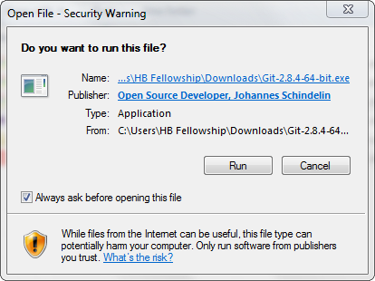
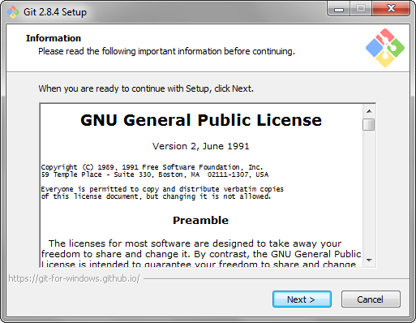
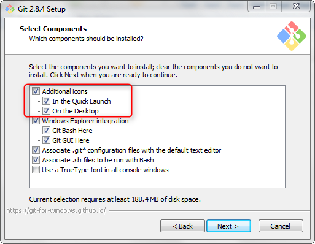
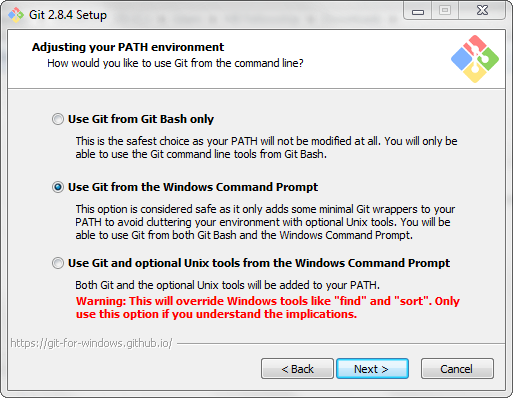
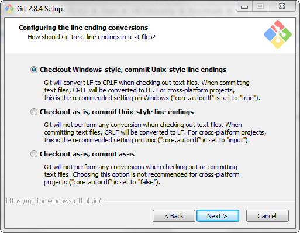
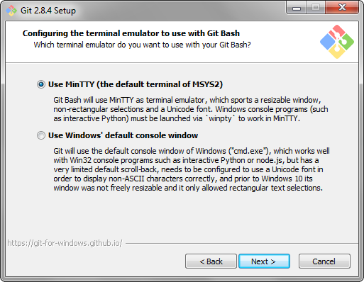
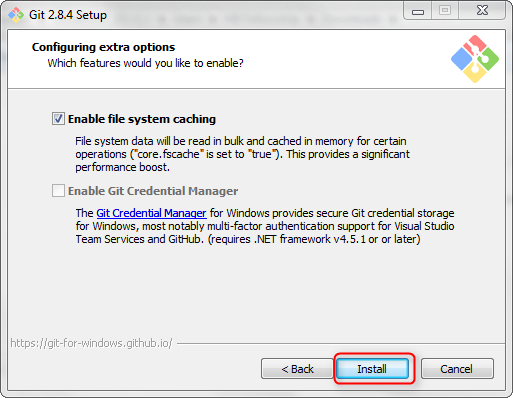
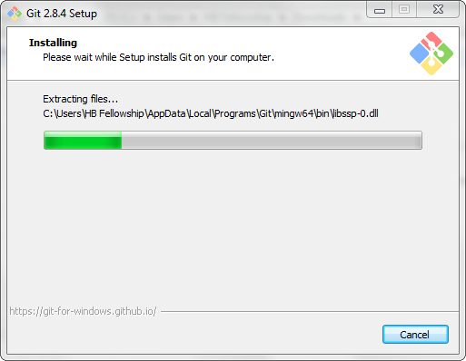
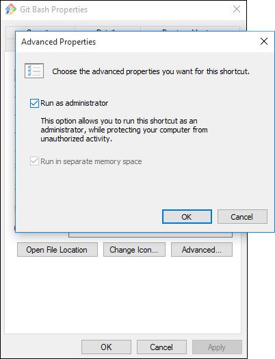

NOTE: These set up steps are all REQUIRED. If you run into trouble, please let us know ASAP, at ontrack@hackbrightacademy.com.
You can figure out what version of Windows you’re on by clicking the Start button, entering Computer in the search box, right-clicking Computer, and then clicking Properties. Look under ‘Windows Edition’ for the version and edition of Windows that your PC is running.
If you have Windows 7 or earlier, you’ll need to upgrade, either your system or your entire computer. If you’re using a laptop which doesn’t support a more recent version of Windows, consider upgrading to a new computer – a more modern machine will not only run everything more smoothly, it will also mean less troubleshooting in the future.
First, let’s install the command-line program from Github, Git Bash. This should only take a few minutes, and mostly involves accepting all of the default options the installer provides (so you’ll mostly just be clicking “Next” to step through the process).
Download Git for Windows from https://git-for-windows.github.io/ to your Downloads directory.
Find the downloaded .exe file and double-click to run it.
You may get a box asking for permission to run this downloaded file; if so, approve it.

At the splash screen for Git containing the GNU General Public License, click “Next” to start the installation wizard. If Git asks you where to install, keep the default directory setting and click “Next”.

Select Components: Make sure to select Additional icons, which will automatically select QuickLaunch and Desktop locations. Click “Next” to approve installation of these Git components.

Click “Next” to approve using Git from the Windows Command Prompt.

Click “Next” to approve configuring line ending conversions to checkout Windows-style, and commit Unix-style line endings (the recommended setting on Windows).

Click “Next” to approve configuring the MinTTY terminal emulator to use with Git Bash. MinTTY is preferable to Windows’ default console window.

Click “Install” to approve enablement of file system caching, open the Git Bash prompt, and begin the installation process.

Wait while Git for Windows is installed.

When it’s done, click ‘Finish.’ There should now be a Git Bash icon on your desktop. Right-click this icon and choose ‘Properties.’ In the ‘Shortcut’ tab, choose ‘Advanced...,’ and make sure ‘Run as administrator’ is checked. Say ‘OK’ twice to cement this change.

From now on, each time you run Git Bash, it will ask you if you want to ‘allow this app from an unknown publisher to make changes to your PC.’ This is expected, and nothing to worry about. Say ‘Yes’ when it asks.
Vagrant is a program which allows you to run a virtual Linux machine on your laptop. This virtual machine is where we’ll do much of our work.
Go to https://www.vagrantup.com/downloads.html and download the Windows version of Vagrant. Run the Vagrant installer. Accept the licensing agreement and keep the default designated folder settings in the Vagrant Setup Wizard.
The Vagrant Wizard will warn that it’s about to restart your computer. Once it’s restarted, open the Git Bash terminal, and run the command pwd to make sure that you’re in your home directory.
$ pwd
/c/Users/YourUserName
(If it outputs /c/Users/YourUserName, then you are. If not, type cd ~, hit enter, and run pwd again.)
Create a directory called vagrant (mkdir vagrant) and a directory called src (mkdir src). (You can run ls to list the files in your home directory, and you should see these two new directories in the list.) Now cd into your new vagrant directory (cd vagrant).
$ mkdir vagrant $ mkdir src $ ls [lots of other files and directories] src/ vagrant/ $ cd vagrant
Download this zip file. Back in the terminal, run unzip ~/Downloads/install-windows.zip (to unzip it) and mv install-windows/* . (to move the resulting files). Important: Note the trailing period in that second command! If you don’t include it, you’ll have to redo this step, starting with downloading the zip file.
$ unzip ~/Downloads/install-windows.zip inflating: install-windows/hb-linux-setup.sh inflating: install-windows/hb-vagrant-setup.sh inflating: install-windows/Vagrantfile $ mv install-windows/* .
Run ls one more time to see the three files you just moved.
$ ls
hb-linux-setup.sh hb-vagrant-setup.sh install-windows/ Vagrantfile
Now run the command vagrant up. If you don’t already have VirtualBox installed, Vagrant should offer to install it for you: Provider ‘virtual box’ not found. We’ll automatically install it for you... Downloading VirtualBox 5.0.10. A series of pop-ups should appear, and it should download and install. You’ll know it’s been successful if you see the following message in the terminal: VirtualBox has been successfully installed!
Running vagrant up will also download and install a copy of Ubuntu Linux, and then start up the virtual Linux machine (though not yet give you a way to interact with said virtual machine). (Note that this process will probably take a few minutes. If it looks like it’s hung up, don’t panic. Get a cup of coffee and it should be done when you get back.)
$ vagrant up
[Possible install messages about VirtualBox]
Bringing machine 'default' up with 'virtualbox' provider...
[many more lines of output, ending with 'default: Cleaning up...']
$
Errors during vagrant up?
If you run into errors during the vagrant up process, check out the “Vagrant Has Never Run Successfully on Your Machine” section of our Vagrant troubleshooting doc here: http://fellowship.hackbrightacademy.com/materials/resources/vagrant-troubleshooting/#vagrant-has-never-run-successfully-on-your-machine.
mesg: ttyname failed: Inappropriate ioctl for device Error?
You may see the above error twice during the vagrant up process, once at the beginning, and once at the end. The details are somewhat complicated, but the short version is that it’s not something to worry about.
Once you’ve successfully run vagrant up, to use the virtual machine, run vagrant ssh. You’ll notice that your prompt will change. Run the command ls, and you should see the src directory. Files in this directory will be mirrored to the src folder you created earlier on your PC. Now cd into it (cd src).
$ vagrant ssh Welcome to Ubuntu 16.04.1 LTS (GNU/Linux 4.4.0-31-generic x86_64) * Documentation: https://help.ubuntu.com * Management: https://landscape.canonical.com * Support: https://ubuntu.com/advantage vagrant@vagrant:~$ ls src vagrant@vagrant:~$ cd src vagrant@vagrant:~/src$
To prove to yourself that these folders are actually linked, run the command touch testfile. If you run ls, you should now see testfile in your directory.
vagrant@vagrant:~/src$ touch testfile vagrant@vagrant:~/src$ ls testfile
Switch into Windows Explorer, open up the src folder, and testfile should be there as well. (Once you’ve seen that it is, you can trash it.)
Back in the terminal, run the command psql. Your prompt should change again, to vagrant=#.
vagrant@vagrant:~/src$ psql psql (9.5.4) Type "help" for help. vagrant=#
Once you’ve verified that this works, take a screenshot (instructions here: http://windows.microsoft.com/en-us/windows/take-screen-capture-print-screen), and then use ctrl-D to get back to your virtual machine prompt. You will send in the screenshot later with your other homework from this assignment.
vagrant=# \q vagrant@vagrant:~/src$
Congrats! Your virtual machine is now set up! To get back to your regular Git Bash terminal, hit ctrl-D again, and then run vagrant halt to turn off the virtual machine. The next time you want to start up the virtual machine, use vagrant up and vagrant ssh. (On a day-to-day basis once Hackbright starts, you’ll use vagrant ssh and ctrl-D to get into and out of the virtual machine, and only vagrant up and vagrant halt after you’ve restarted and before you shut down your computer. The machine will continue to run in the background, but it uses exceedingly little memory to do so.)
We’ll install Sublime Text, the editor we’ll use to edit code.
Download this from http://c758482.r82.cf2.rackcdn.com/Sublime%20Text%202.0.2%20x64%20Setup.exe
Run the downloaded installer. You may be prompted for permission to run the installer. If so, approve the installation.
Click “Next” to approve all the steps of the installation process and, at the end, click “Finish.”
In your Start Menu or application launcher, you should now have “Sublime Text 2.”
Open Sublime Text 2.
Under the “Preferences” menu, choose “Settings - User.”
Copy/paste so that your preference file contains this:
{
"default_line_ending": "unix",
"translate_tabs_to_spaces": true,
"tab_size": 4,
"rulers": [80]
}
Now save and close the settings file.
Sublime has a ‘linting’ plugin which provides unobtrusive hints as you type your code about syntax errors, style mistakes, and the like. In order to install it, you’ll first need to install a package manager plugin. Follow the instructions at the link below to install it (make sure you select Sublime 2):
https://sublime.wbond.net/installation#st2
Use the Package Manager you installed above to install the SublimeLinter plugin (go to Preferences → Package Control, then choose “Install Package” and enter “SublimeLinter”).